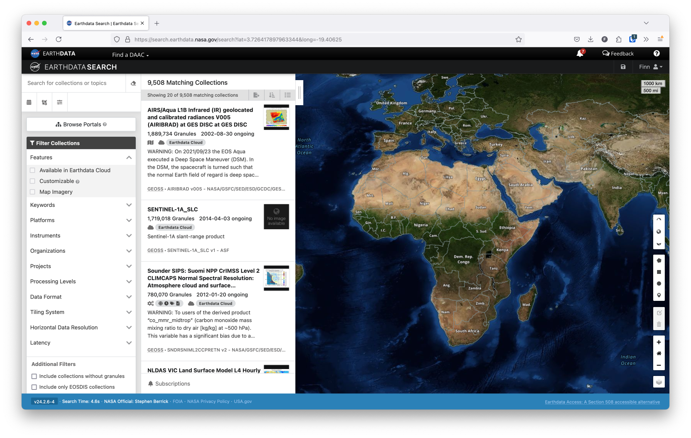
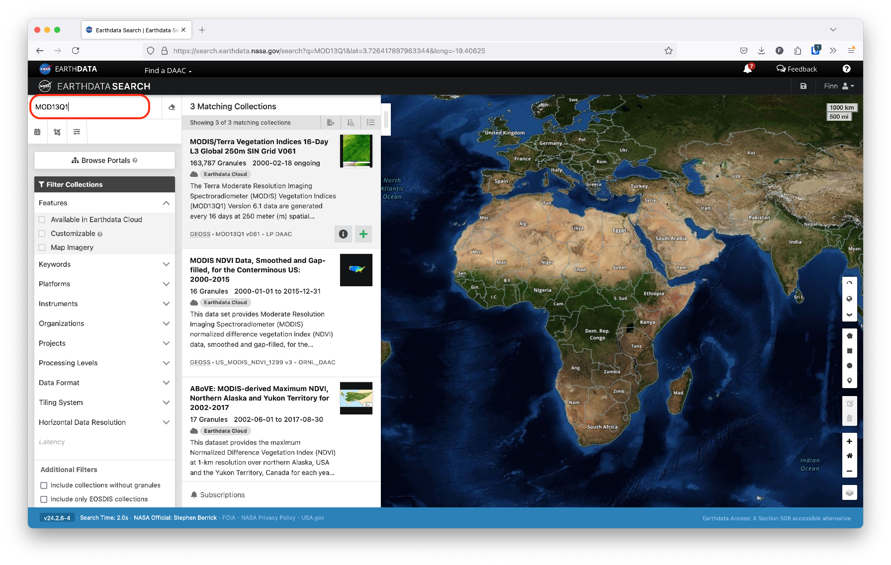
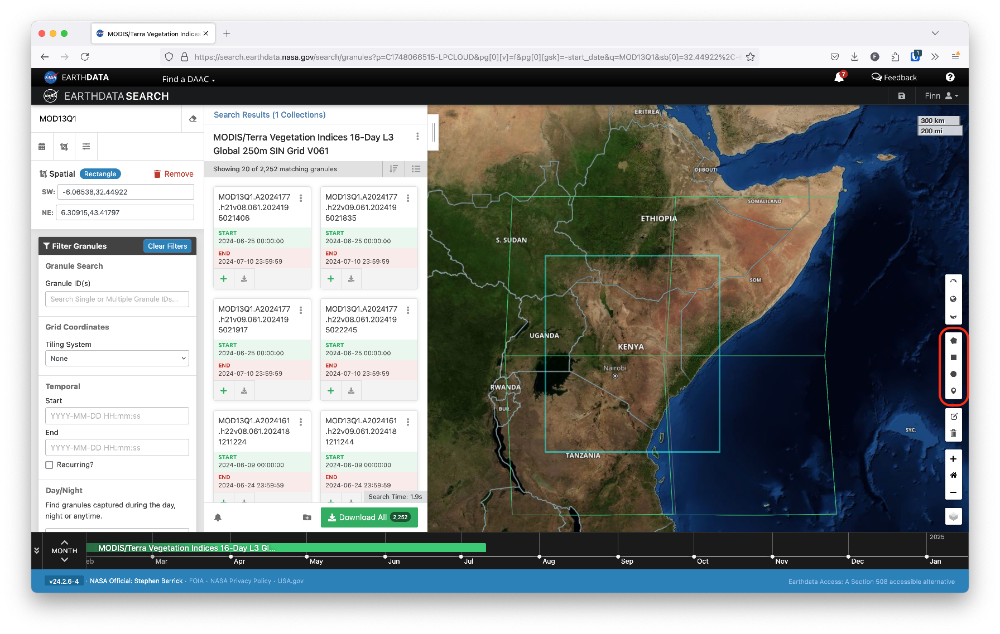
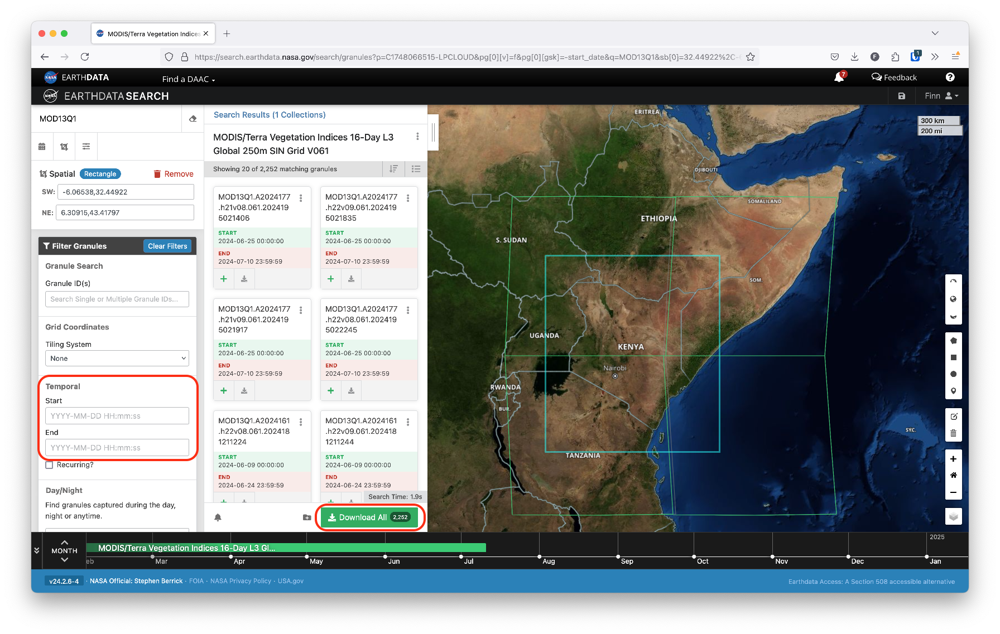
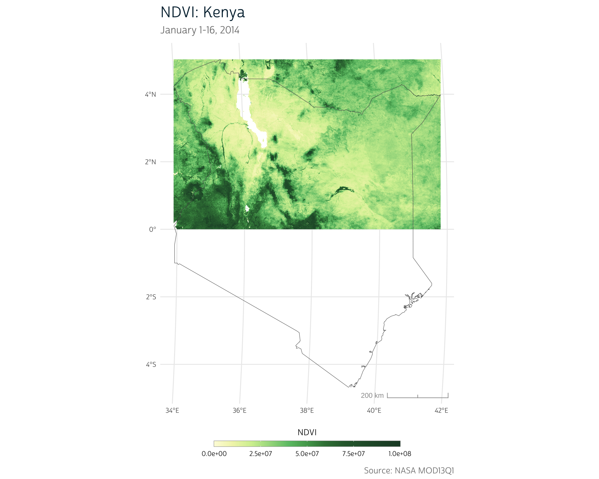
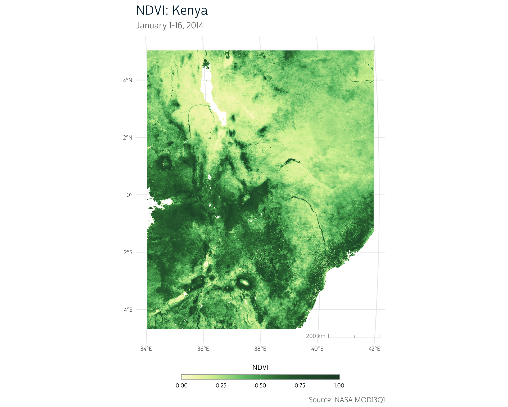

In our previous post, we introduced NDVI as a remote sensing tool that can be used to study the effects of climate conditions on malnourishment and other health outcomes. In this post, we’ll show how to access and load NDVI data using R.
NDVI vs. other climate data sources
Like the other climate metrics we’ve used on this blog (CHIRPS and CHIRTS), NDVI data are also provided in raster format. However, there are some key differences.
First, NDVI is a calculated value, whereas our previous climate metrics were modeled values. That is, NDVI is calculated directly from the reflectance of different light wavelengths as measured via satellite. In contrast, CHIRPS and CHIRTS integrate ground-level station data with satellite observations to create a model of rainfall and temperature across the surface.
NDVI is also provided at higher resolutions than CHIRPS or CHIRTS. For population health research, this resolution typically exceeds what is useful since we will be linking NDVI data to survey data that has far more geographic uncertainty. Still, this difference can introduce new challenges as NDVI raster files can be much larger than the files for the other metrics we have worked with so far.
Depending on the data source, NDVI data may be distributed for specific spatial extents and at multi-week time intervals. Whereas daily time series of CHIRPS and CHIRTS could be downloaded for large spatial extents and cropped to an area of interest, NDVI often requires more manual work to integrate data from different spatial extents and time intervals.
This post will primarily focus on this last point. We’ll demonstrate some of the additional steps required to produce a usable NDVI time series for a particular area of interest. In the process, we’ll introduce new R techniques that can assist in this workflow.
Obtaining NDVI Data
Not only are there multiple sources that provide NDVI data, there are also multiple satellites that collect the images used to calculate NDVI. For this post, we’ll use data from NASA’s MODIS satellite, which provides data at a 250 meter resolution.
While this resolution exceeds our typical needs, we use 250 meter data for this post and the next to help demonstrate some of the relevant considerations for working with NDVI data in a population health context.
Remote sensing instruments exist in a constant state of evolution as satellites are launched and retired. This means that researchers relying on remotely sensed data—like NDVI—often need to develop fluency with multiple data products that may cover different time periods, spatial ranges, or provide different types of imaging data.
In fact, NASA’s Terra satellite—which houses MODIS instruments—will be retired in the near future. Because of this, many researchers now use NASA’s VIIRS product to obtain NDVI data.
We’re still using MODIS for the demonstrations in this post because these data are widely familiar and may still be valuable for certain time periods before newer products became available.
In the future, we hope to release more posts highlighting additional data products!
Earthdata Search
We’ll use NASA’s Earthdata Search web interface to select and download data. Earthdata Search provides access to NASA’s immense archive of satellite data.
Before you can access MODIS register for access to Earthdata Search, you’ll need to register for a free account.
Find data
Once you’ve registered for an account, you can open up the Earthdata Search interface, which should look something like this:

From this interface, you can search for data across many NASA products.
Selecting a product
As mentioned above, we’ll use data from MODIS for this post. MODIS provides several different NDVI products that vary in their temporal and spatial resolution. Each product has a specific code used to reference it (see the previous link for a table including these codes).
Some products are provided at the monthly level. If you don’t need finer temporal resolution, it’s preferable to download the monthly data provided directly by NASA. This is because NASA performs additional quality assurance steps when producing monthly data, including adding corrections for pixels obscured due to cloud cover and other similar tweaks. NASA’s processing will generally be better than any preprocessing we would do on our own.
Of course, for more finely-tuned temporal analyses (e.g. start-of-season analyses), it may be more appropriate to download data from one of the 16-day MODIS products.
Either way, you can search for a particular product by typing its code in the search bar in the top left of the Earthdata Search interface, as shown below.

In our case, we’ve selected the MOD13Q1 product, which provides data at a 250 meter resolution in 16-day increments.
You can also select a geographic region of interest using the polygon drawing tools on the right side of the screen. For instance, to identify data for Kenya, we can draw a polygon around the country. Selecting a region will highlight the different areas, or tiles, for which we can download data.
In the case of Kenya, the country spans 4 different MODIS tiles. To obtain full coverage of the entire country, we’ll need to download each tile and stich them together.

To narrow down further, you can filter the time range of data by entering start and end dates on the left side of the interface.
Once you’ve selected the area and time of interest, you can click the Download button to proceed to the download page, as shown below.

Download
Depending on how many tiles and time increments you’ll be downloading, you’ll notice that the estimated data storage size will be quite large. This is both a product of the resolution of this data as well as the fact that we must download full tiles of data. That is, we can’t download data just for our region of interest alone; instead, we have to download data for the MODIS tile(s) that contain that region and then crop the resulting data.
Data storage concerns
Data storage can therefore be a significant barrier with working with long time series of NDVI data. This is why most institutions and researchers who work extensively with raster data have dedicated server space to use when running raster operations.
However, if your area of interest is small enough, it may be possible to build up a dataset by downloading and cropping data to that area incrementally, preventing you from needing to store large image files indefinitely.
There are also cloud-based solutions available, Google Earth Engine and Amazon Web Services. Google Earth Engine in particular has become a popular interface that combines an interactive map and documentation with a JavaScript library that allows you to write scripts for geoprocessing on Google’s servers. We won’t discuss these options extensively here, but if you begin working on more data-intensive spatial projects, it may be worth exploring what they have to offer.
Downloaded files
After clicking the Download link, you should be redirected to a download page that shows the individual files that fit your selection criteria. The page will also include a download.sh script that will perform a batch download. This can be useful if you’re downloading data for many files at once. See the Earthdata documentation for more details on how to use this script to automate the download of many files.
You’ll get a separate HDF file for each tile and time increment. Fortunately, terra is able to load HDF files, so we don’t need to learn any new R tools yet. However, because each tile represents a different spatial extent, we need to use a new technique to combine them into a single source, called a mosaic.

© Robert J. Hijmans et al. (GPL >=3)
Preparing NDVI data
Now that we have our data downloaded, we’ll shift our focus to loading those data into R. For this demonstration, we’ve downloaded data for the 4 tiles that cover the entirety of Kenya for 2 time intervals in 2014. That is, we have 8 total files downloaded.
In practice, you’d likely include a longer time series; we’ve opted to use only 2 dates to limit the processing time required for this demo. Regardless, we will demonstrate a workflow that can be easily scaled to load more files.
Before getting started, we’ll load some of the familiar packages that have been introduced previously on the blog:
NASA image files
NASA provides its files in HDF format. Each HDF file is identified by its tile code (e.g. h21v08) and its timestamp code (e.g. A2014001). To mosaic our tiles, we’ll need to create a separate raster stack for each tile across all of our timestamps.
HDF stands for Hierarchical Data Format, yet another common raster data file format.
First, we’ll list all our files, which we’ve saved in a directory we’ve named data_local/MOD13Q1:
files <- list.files("data_local/MOD13Q1", full.names = TRUE)You’ll notice that each file contains the tile code and timestamp in the file name.
files
#> [1] "data_local/MOD13Q1/MOD13Q1.A2014001.h21v08.061.2021246163834.hdf"
#> [2] "data_local/MOD13Q1/MOD13Q1.A2014001.h21v09.061.2021246163703.hdf"
#> [3] "data_local/MOD13Q1/MOD13Q1.A2014001.h22v08.061.2021246164307.hdf"
#> [4] "data_local/MOD13Q1/MOD13Q1.A2014001.h22v09.061.2021246155251.hdf"
#> [5] "data_local/MOD13Q1/MOD13Q1.A2014209.h21v08.061.2021260011612.hdf"
#> [6] "data_local/MOD13Q1/MOD13Q1.A2014209.h21v09.061.2021260011337.hdf"
#> [7] "data_local/MOD13Q1/MOD13Q1.A2014209.h22v08.061.2021260023343.hdf"
#> [8] "data_local/MOD13Q1/MOD13Q1.A2014209.h22v09.061.2021260023455.hdf"Ultimately, we’ll need to group each of these files such that we can create a single raster stack for each tile. The layers in that stack should correspond to the data’s timestamps. This will produce a time series of NDVI data for each spatial region which can later be combined with the adjacent regions.
To achieve this, we’ll need to leverage the tile and timestamp codes that NASA provides in its file names.
Regular expressions
Right now, all our files are in one large list. But because they represent different spatial extents, we can’t load them all at once with terra:
rast(files)
#> Error: [rast] extents do not matchInstead, we need to first organize our files by their tile codes. We could go ahead and manually store the codes for later access like so:
However, this wouldn’t produce a very flexible workflow: if we ever decided to perform a similar analysis for different times or spatial regions, we’d have to modify these codes manually.
An alternative approach would be to dynamically extract the codes using regular expressions. The term regular expressions refers to a specific syntax designed to identify and extract sequences of characters in a set of text.
We’ll use the stringr package to demonstrate the basics of regular expressions:

© RStudio, Inc. (MIT)
At their simplest, regular expressions allow you to extract specific characters from a string:
# str_detect() tells us whether a search pattern exists in the target string
# "b" does exist in the string
str_detect("abc123", "b")
#> [1] TRUE
# "z" does not exist in the string:
str_detect("abc123", "z")
#> [1] FALSEHowever, regular expressions may also include special characters, which allow you to search more flexibly. For instance, [ brackets allow us to define a character class, which will detect whether any of the enclosed characters is present.
str_detect("abc123", "[ahz]")
#> [1] TRUEWe can use a similar approach to search for any numeric digits in our string:
str_detect("abc123", "[0-9]")
#> [1] TRUECurly braces can be used to detect a certain number of sequential characters. For instance, to determine whether the string contains 3 consecutive digits:
str_detect("abc123", "[0-9]{3}")
#> [1] TRUEThis returns TRUE, but if we searched for a longer sequence, we’d no longer be able to detect a match for the pattern:
str_detect("abc123", "[0-9]{4}")
#> [1] FALSEThe special characters ^ and $ represent the start and end of the string, respectively. For instance, to determine if the string starts with a digit:
str_detect("abc123", "^[0-9]")
#> [1] FALSEOr to determine if it ends with a digit:
str_detect("abc123", "[0-9]$")
#> [1] TRUEThere are far more available options in the regular expression language, and we won’t be able to cover them all here. The stringr package includes a helpful introduction to help you get started.
In our case, we can use the basic syntax we just introduced to extract the tile code from our file names:
# Extract h00v00 tile code pattern
tile_codes <- unique(str_extract(files, "h[0-9]{2}v[0-9]{2}"))
tile_codes
#> [1] "h21v08" "h21v09" "h22v08" "h22v09"Importantly, if we ever download new files for different tiles, this code will still extract their tile codes without any modification (that is, unless NASA changes their file naming conventions unexpectedly).
Regular expressions therefore allow us to implement a generalized approach that is more robust to future changes in our analysis.
An iterative R workflow
Next, we need to group the files so that all files for a single tile are placed together. That way, all the timestamps for each tile will be loaded into a raster stack with a single spatial extent. Each layer will correspond to a different timestamp.
Because we have multiple tiles and multiple files for each tile, we will likely need to apply the same set of processing operations many times over. While we could copy and paste our code to group each tile’s files, this would quickly become tedious. Furthermore, hard-coding our file groups would make it harder to make modifications if we were to add more files to our analysis or adapt our code to work with a different region.
Instead, we can build an iterative workflow that will automatically apply our processing steps for each tile.
The purrr package
We’ll use the purrr package to build our workflow. The purrr package provides a concise syntax for iterating through multiple inputs. This is primarily facilitated by purrr’s map() function.

© RStudio, Inc. (GPL-3)
map() allows us to iterate by providing two things:
- The list (or vector) of objects we want to iterate over
- A function describing the operation we want to do for each element in the list
For instance, take this list of letters:
Let’s say we want to find out the length of each element in our list. Many R functions are vectorized, so we might think to simply use length() on our list:
Vectorized functions automatically operate on each individual element of a vector. For instance, nchar() can count characters in a single string or for each string in a vector of strings.
length(l)
#> [1] 3However, this gives us the length of our input list l, which isn’t what we want. Instead, we can use purrr to map the length() function to each element in our list l:
We can also provide the function in R’s anonymous function syntax, which we introduced previously. For instance:
If you want to modify other arguments of the function being mapped, you’ll need to use anonymous function syntax instead of the function name itself.
We see that map() returns a list containing the result we get when we apply the length() function to each individual element in l.
We can do a similar process with our raster tiles. For each tile code, we want to detect the files that contain that tile code in their name. This way, we can group those files together.
Here, we use str_detect() to detect the presence of the input tile_code string in our set of files. For each tile code, we’ll get a set of logical values indicating the position of the files that contain that code.
# For each tile code, identify the file indexes that contain that code
map(
tile_codes,
function(code) str_detect(files, code)
)
#> [[1]]
#> [1] TRUE FALSE FALSE FALSE TRUE FALSE FALSE FALSE
#>
#> [[2]]
#> [1] FALSE TRUE FALSE FALSE FALSE TRUE FALSE FALSE
#>
#> [[3]]
#> [1] FALSE FALSE TRUE FALSE FALSE FALSE TRUE FALSE
#>
#> [[4]]
#> [1] FALSE FALSE FALSE TRUE FALSE FALSE FALSE TRUEWe can use these logical values to subset the file names that correspond to each tile code. Remember that we’ll have multiple files for each tile because we’re working with multiple timestamps:
tiles <- map(
tile_codes,
function(code) files[str_detect(files, code)]
)
tiles
#> [[1]]
#> [1] "data_local/MOD13Q1/MOD13Q1.A2014001.h21v08.061.2021246163834.hdf"
#> [2] "data_local/MOD13Q1/MOD13Q1.A2014209.h21v08.061.2021260011612.hdf"
#>
#> [[2]]
#> [1] "data_local/MOD13Q1/MOD13Q1.A2014001.h21v09.061.2021246163703.hdf"
#> [2] "data_local/MOD13Q1/MOD13Q1.A2014209.h21v09.061.2021260011337.hdf"
#>
#> [[3]]
#> [1] "data_local/MOD13Q1/MOD13Q1.A2014001.h22v08.061.2021246164307.hdf"
#> [2] "data_local/MOD13Q1/MOD13Q1.A2014209.h22v08.061.2021260023343.hdf"
#>
#> [[4]]
#> [1] "data_local/MOD13Q1/MOD13Q1.A2014001.h22v09.061.2021246155251.hdf"
#> [2] "data_local/MOD13Q1/MOD13Q1.A2014209.h22v09.061.2021260023455.hdf"At this point we can load each of our tiles into a separate raster stack using terra’s rast(). Each of these files contains several layers with different measures. We can peek at the layers by loading the first file. We’re only interested in the layer of NDVI values, which we see is the first layer:
names(rast(files[1]))
#> [1] "\"250m 16 days NDVI\""
#> [2] "\"250m 16 days EVI\""
#> [3] "\"250m 16 days VI Quality\""
#> [4] "\"250m 16 days red reflectance\""
#> [5] "\"250m 16 days NIR reflectance\""
#> [6] "\"250m 16 days blue reflectance\""
#> [7] "\"250m 16 days MIR reflectance\""
#> [8] "\"250m 16 days view zenith angle\""
#> [9] "\"250m 16 days sun zenith angle\""
#> [10] "\"250m 16 days relative azimuth angle\""
#> [11] "\"250m 16 days composite day of the year\""
#> [12] "\"250m 16 days pixel reliability\""Because data at this resolution can be memory-intensive, we can load only the layer of NDVI data by using the lyrs argument to rast():
rast(files[1], lyrs = 1)
#> class : SpatRaster
#> dimensions : 4800, 4800, 1 (nrow, ncol, nlyr)
#> resolution : 231.6564, 231.6564 (x, y)
#> extent : 3335852, 4447802, 0, 1111951 (xmin, xmax, ymin, ymax)
#> coord. ref. : +proj=sinu +lon_0=0 +x_0=0 +y_0=0 +R=6371007.181 +units=m +no_defs
#> source : MOD13Q1.A2014001.h21v08.061.2021246163834.hdf:MODIS_Grid_16DAY_250m_500m_VI:250m 16 days NDVI
#> varname : MOD13Q1.A2014001.h21v08.061.2021246163834
#> name : "250m 16 days NDVI"However, we’ll be loading multiple files (one for each timestamp) into each raster stack for each tile. Therefore, we have to select the first layer of each raster file. The lyrs argument considers all the files together when loading them. That is, lyrs = 1 doesn’t refer to the first layer of each file. Instead, it will extract the very first layer of the first file only.
Fortunately, each file is organized identically, so we know that NDVI will always be the first layer. Because there are 12 layers in each file, we just need to load every 12th layer. We can easily build a sequence that contains the correct layer numbers:
Now, we can again map() over our file groups to load each set of files, selecting out only the NDVI layers:
We see that we now have a list of 4 separate raster stacks, because we loaded each entry in tiles separately:
ndvi_tiles
#> [[1]]
#> class : SpatRaster
#> dimensions : 4800, 4800, 2 (nrow, ncol, nlyr)
#> resolution : 231.6564, 231.6564 (x, y)
#> extent : 3335852, 4447802, 0, 1111951 (xmin, xmax, ymin, ymax)
#> coord. ref. : +proj=sinu +lon_0=0 +x_0=0 +y_0=0 +R=6371007.181 +units=m +no_defs
#> sources : MOD13Q1.A2014001.h21v08.061.2021246163834.hdf:MODIS_Grid_16DAY_250m_500m_VI:250m 16 days NDVI
#> MOD13Q1.A2014209.h21v08.061.2021260011612.hdf:MODIS_Grid_16DAY_250m_500m_VI:250m 16 days NDVI
#> varnames : MOD13Q1.A2014001.h21v08.061.2021246163834
#> MOD13Q1.A2014209.h21v08.061.2021260011612
#> names : "250m 16 days NDVI", "250m 16 days NDVI"
#>
#> [[2]]
#> class : SpatRaster
#> dimensions : 4800, 4800, 2 (nrow, ncol, nlyr)
#> resolution : 231.6564, 231.6564 (x, y)
#> extent : 3335852, 4447802, -1111951, 0 (xmin, xmax, ymin, ymax)
#> coord. ref. : +proj=sinu +lon_0=0 +x_0=0 +y_0=0 +R=6371007.181 +units=m +no_defs
#> sources : MOD13Q1.A2014001.h21v09.061.2021246163703.hdf:MODIS_Grid_16DAY_250m_500m_VI:250m 16 days NDVI
#> MOD13Q1.A2014209.h21v09.061.2021260011337.hdf:MODIS_Grid_16DAY_250m_500m_VI:250m 16 days NDVI
#> varnames : MOD13Q1.A2014001.h21v09.061.2021246163703
#> MOD13Q1.A2014209.h21v09.061.2021260011337
#> names : "250m 16 days NDVI", "250m 16 days NDVI"
#>
#> [[3]]
#> class : SpatRaster
#> dimensions : 4800, 4800, 2 (nrow, ncol, nlyr)
#> resolution : 231.6564, 231.6564 (x, y)
#> extent : 4447802, 5559753, 0, 1111951 (xmin, xmax, ymin, ymax)
#> coord. ref. : +proj=sinu +lon_0=0 +x_0=0 +y_0=0 +R=6371007.181 +units=m +no_defs
#> sources : MOD13Q1.A2014001.h22v08.061.2021246164307.hdf:MODIS_Grid_16DAY_250m_500m_VI:250m 16 days NDVI
#> MOD13Q1.A2014209.h22v08.061.2021260023343.hdf:MODIS_Grid_16DAY_250m_500m_VI:250m 16 days NDVI
#> varnames : MOD13Q1.A2014001.h22v08.061.2021246164307
#> MOD13Q1.A2014209.h22v08.061.2021260023343
#> names : "250m 16 days NDVI", "250m 16 days NDVI"
#>
#> [[4]]
#> class : SpatRaster
#> dimensions : 4800, 4800, 2 (nrow, ncol, nlyr)
#> resolution : 231.6564, 231.6564 (x, y)
#> extent : 4447802, 5559753, -1111951, 0 (xmin, xmax, ymin, ymax)
#> coord. ref. : +proj=sinu +lon_0=0 +x_0=0 +y_0=0 +R=6371007.181 +units=m +no_defs
#> sources : MOD13Q1.A2014001.h22v09.061.2021246155251.hdf:MODIS_Grid_16DAY_250m_500m_VI:250m 16 days NDVI
#> MOD13Q1.A2014209.h22v09.061.2021260023455.hdf:MODIS_Grid_16DAY_250m_500m_VI:250m 16 days NDVI
#> varnames : MOD13Q1.A2014001.h22v09.061.2021246155251
#> MOD13Q1.A2014209.h22v09.061.2021260023455
#> names : "250m 16 days NDVI", "250m 16 days NDVI"To confirm that each raster stack comes from a different tile, we note that each has a different spatial extent:
map(ndvi_tiles, ext)
#> [[1]]
#> SpatExtent : 3335851.559, 4447802.078667, 0, 1111950.519667 (xmin, xmax, ymin, ymax)
#>
#> [[2]]
#> SpatExtent : 3335851.559, 4447802.078667, -1111950.519667, 0 (xmin, xmax, ymin, ymax)
#>
#> [[3]]
#> SpatExtent : 4447802.078667, 5559752.598333, 0, 1111950.519667 (xmin, xmax, ymin, ymax)
#>
#> [[4]]
#> SpatExtent : 4447802.078667, 5559752.598333, -1111950.519667, 0 (xmin, xmax, ymin, ymax)Crop tiles
Next, we’ll crop our tiles to our area of interest (in this case, using the Kenya national borders). This will reduce the size of our files going forward and speed up any subsequent processing.
To crop the tiles to our area of interest, we’ll need country borders. We’ll load the integrated boundaries from IPUMS and dissolve them (with st_union()) to get the national border.
ke_borders <- ipumsr::read_ipums_sf("data/geo_ke1989_2014.zip") |>
st_make_valid() |> # Fix minor border inconsistencies
st_union()We need to make sure our borders are in the same coordinate system as our raster before we can crop to its extent, so we’ll extract the CRS from one of our rasters and use it with st_transform() to convert our borders’ CRS. (We’ve introduced st_transform() in the past.)
In general, if you’re working with both raster and vector data, it’s best to project the vector data to match your raster data rather than the reverse.
Projecting a raster distorts the cells, but because rasters necessarily are represented as a uniform grid, the values in the new cells must be resampled from the original grid, as the new cell locations may overlap with multiple input cell locations. This adds an additional later of uncertainty to the data.
# Obtain CRS of NDVI raster data
ndvi_crs <- crs(ndvi_tiles[[1]])
# Transform borders to same CRS as NDVI
ke_borders <- st_transform(ke_borders, crs = ndvi_crs)Now, we can use our borders to crop each tile, removing the values outside of the border area. Note that we still need to use map() because our rasters are still separate elements in the ndvi_tiles list:
Now we’re ready to join our tiles together!
Mosaic tiles
We can mosaic our cropped tiles together with terra’s mosaic() function. Typically mosaic() only takes two rasters.
# Mosaic two of our tiles together
ndvi_mosaic <- mosaic(ndvi_tiles[[1]], ndvi_tiles[[3]])However, we need to mosaic all 4 tiles to cover Kenya in its entirety:
Show plot code
ndvi_pal <- list(
pal = c(
"#fdfbdc",
"#f1f4b7",
"#d3ef9f",
"#a5da8d",
"#6cc275",
"#51a55b",
"#397e43",
"#2d673a",
"#1d472e"
),
values = c(0, 0.1, 0.2, 0.3, 0.4, 0.5, 0.6, 0.7, 1)
)
ggplot() +
layer_spatial(ndvi_mosaic[[1]]) +
layer_spatial(st_simplify(ke_borders, dTolerance = 1000), fill = NA) +
scale_fill_gradientn(
colors = ndvi_pal$pal,
values = ndvi_pal$values,
limits = c(0, 100000000),
na.value = "transparent"
) +
labs(
title = "NDVI: Kenya",
subtitle = "January 1-16, 2014",
fill = "NDVI",
caption = "Source: NASA MOD13Q1"
) +
theme_dhs_map()
We could manually mosaic all the tiles together, but purrr actually provides a more efficient solution. The reduce() function allows us to collapse a set of objects stored in a list by repeatedly applying the same operation to each pair of list elements.
That is, reduce() allows us to mosaic the first two entries in our ndvi_tiles list, then mosaic that output with the next entry in the list, and so on. We simply need to provide the list of our raster tiles and the function that we want to use to collapse the list. In this case, we want to mosaic() the elements in the list together into a single raster output.
ke_ndvi <- reduce(ndvi_tiles, mosaic)Next, we’ll rescale the NDVI values, which should range from -1 to 1:
ke_ndvi <- ke_ndvi / 100000000Show plot code
ggplot() +
layer_spatial(ke_ndvi[[1]]) +
scale_fill_gradientn(
colors = ndvi_pal$pal,
values = ndvi_pal$values,
limits = c(0, 1),
na.value = "transparent"
) +
labs(
title = "NDVI: Kenya",
subtitle = "January 1-16, 2014",
fill = "NDVI",
caption = "Source: NASA MOD13Q1"
) +
theme_dhs_map()
Notice that no time information is attached to our output raster:
time(ke_ndvi)
#> [1] NA NAThe time information is stored in a A0000000 format string in the file name. The first 4 digits after the A contain the data year, and the next 3 contain the day of the year.
We can again use a regular expression to extract the timestamps using this pattern:
# Extract 7-digit sequence following an "A"
timestamps <- unique(stringr::str_extract(files, "(?<=A)[0-9]{7}"))
timestamps
#> [1] "2014001" "2014209""(?<=A)" is referred to as a lookbehind assertion. It will match elements of a string only if they follow the text in the assertion (in this case, "A"). For more about assertions, check out this cheatsheet.
These timestamps are in year + day of year format. We can parse this format using lubridate, using "yj" format.

© Garrett Grolemund, Hadley Wickham (GPL >= 2)
Learn more about the different codes used to specify time formats here.
# Parse time format and attach to our output raster
time(ke_ndvi) <- unique(lubridate::parse_date_time(timestamps, "yj"))Note that by manually setting the time after combining our tiles together, we may miss the possibility that certain tiles may have been recorded at a different time than others. MODIS data are fairly reliable time-wise, so these files do all share the same timestamps, but when combining files, it’s always worth confirming that each raster was recorded for the expected time range.
Now, we finally have a full set of NDVI data for our area of interest. We have full spatial coverage for Kenya, and we’ve got our timestamps represented in distinct layers of our raster:
ke_ndvi
#> class : SpatRaster
#> dimensions : 4662, 3795, 2 (nrow, ncol, nlyr)
#> resolution : 231.6564, 231.6564 (x, y)
#> extent : 3769512, 4648648, -520300.2, 559681.8 (xmin, xmax, ymin, ymax)
#> coord. ref. : +proj=sinu +lon_0=0 +x_0=0 +y_0=0 +R=6371007.181 +units=m +no_defs
#> source : spat_154cc19f39e4_87244.tif
#> names : "250m 16 days NDVI", "250m 16 days NDVI"
#> min values : -0.2000, -0.2000
#> max values : 0.9995, 0.9995
#> time : 2014-01-01 to 2014-07-28 UTCShow plot code
library(patchwork)
#>
#> Attaching package: 'patchwork'
#> The following object is masked from 'package:terra':
#>
#> area
ke_ndvi_mask <- mask(ke_ndvi, vect(ke_borders))
p1 <- ggplot() +
layer_spatial(ke_ndvi_mask[[1]]) +
layer_spatial(ke_borders, fill = NA) +
scale_fill_gradientn(
colors = ndvi_pal$pal,
values = ndvi_pal$values,
limits = c(0, 1),
na.value = "transparent"
) +
labs(
subtitle = "January 1-16, 2014",
fill = "NDVI"
) +
theme_dhs_map(show_scale = FALSE) +
theme_dhs_base()
p2 <- ggplot() +
layer_spatial(ke_ndvi_mask[[2]]) +
layer_spatial(ke_borders, fill = NA) +
scale_fill_gradientn(
colors = ndvi_pal$pal,
values = ndvi_pal$values,
limits = c(0, 1),
na.value = "transparent"
) +
labs(
subtitle = "July 28-August 12, 2014",
fill = "NDVI"
) +
theme_dhs_map() +
theme_dhs_base()
p1 + p2 +
plot_layout(guides = "collect", ncol = 2) +
plot_annotation(
title = "Seasonal NDVI Comparison: Kenya",
caption = "Source: NASA MOD13Q1"
) &
theme(legend.position='bottom')
Up next
In this post, we’ve introduced some approaches to build generalized workflows when loading more complicated raster data structures. Using tools like regular expressions and iteration help you produce code that is robust when your data or analyses change. The up-front time investment required for learning these tools often pays off in the long run, especially if you frequently use similar data analysis approaches.
As we can see in our maps above, NDVI differs significantly across the year. In our next technical post, we’ll take a closer look at this idea of seasonality and consider ways we can adapt our previous work with other climate metrics to incorporate seasons more explicitly.
Getting Help
Questions or comments? Check out the IPUMS User Forum or reach out to IPUMS User Support at ipums@umn.edu.